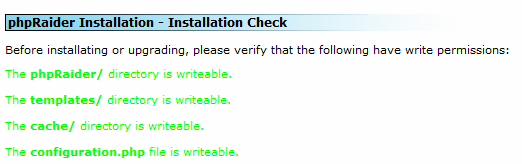

Requirements
phpRaider requires a web server (IIS, Apache, etc), a MySQL database (4.1 or higher),
PHP (4.0 or higher), and a minimal knowledge of software installation
Installing phpRaider
Installing phpRaider is meant to be an easy process. Follow the steps below for a quick
and easy way to get up and running in no time.
- Download the latest version of phpRaider, available at http://www.phpraider.com/.
- Unzip the file locally and upload the files to your webserver OR upload the archive to your server and unpack them there. Be sure to keep the directory structure intact!
-
Start the installation process by pointing your browser to http://www.yourdomain.com/phpraider.
Give the folders cache/, and templates_c write permissions.
You must also give write permissions to the configuration.php file. If this file
does not exist create an empty file named configuration.php and give it write permissions.
For safety reasons, you should remove the write permissions to configuration.php and the phpRaider folder after the installation.
Aftewards, you should see something similar to the following:
- Click continue, read the license information and on the next step choose "Fresh Installation." The rest of the install process is automated with minimal user input.
- Once installation completes, be sure to remove the install/ directory as leaving it intact is a serious security risk!
Upgrading phpRaider
Upgrading phpRaider is nearly identical to a fresh installation. It is recommended that
you completely remove any previous installations leaving the configuration.php file
and games/ folder in place before uploading the new archive. Failure to do so may
result in unforseen complications. Afterwards, follow the installation steps but choose "Upgrade"
on step 4.
If you're not running 1.0.7b or 1.0.8, then due to a known bug in the old 1.0.7 installation/upgrade,
it's recomended that you run an upgrade from 1.0.6 in this installation.
Configuring phpRaider
After installing phpRaider it is important that you complete the phpRaider configuration.
You can access this via the Administer -> Configuration menu.
Installing a game package
Before you can create a raid you will need to install a game package. Game packages can
be found on the phpRaider downloads sections of
the phpRaider website. After downloading a game file you can install it via two methods.
- Go to Administer -> Configuration and choose install game. Hit browse to select the game package and submit to install the package. Then, choose the game from the game dropdown menu and hit submit to save the configuration.
- If the above fails to work, you must manually install the game package. Unzip the game package to your computer and you will notice the game folder and an install.sql file. Upload the folder to your server under the phpraider/games/ folder and then run the install.sql file on your database using phpMyAdmin or another form of database management. Afterwards, go to the configuration screen (Administer -> Configuration) and select the game from the game dropdown menu and hit submit to save the configuration.